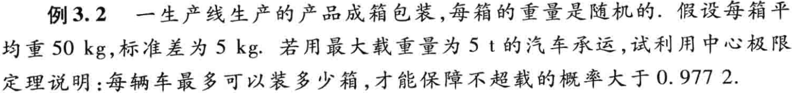
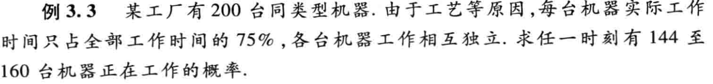
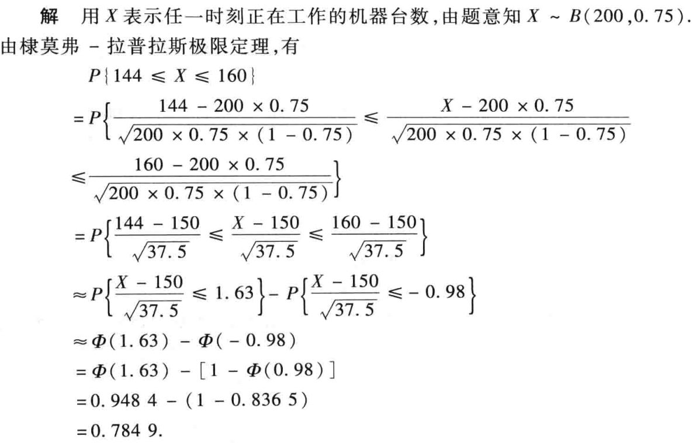

大数定律及中心极限定理¶
0 总结¶
1 切比雪夫不等式¶
-
设 \(X\) 的数学期望和方差都存在，则对任意给定的正数 \(\varepsilon\)，有
\[\begin{equation} P \left \{|X - E(X)| \ge \varepsilon \right \} \le \dfrac{D(X)}{\varepsilon^2} \end{equation}\]Note
- 方差 \(D(X)\) 越小，事件 \(|X - E(X)| < \varepsilon\) 的概率越大。说明 \(X\) 的取值越集中在均值 \(E(X)\) 附近， 即 \(X\) 偏离 \(E(X)\) 的程度越小，故方差 \(D(X)\) 确实是反映 \(X\) 偏离 \(E(X)\) 程度的量。
- 无需知道 \(X\) 的分布,只要知道 \(D(X)\)，就可对 \(X\) 落入以 \(E(X)\) 为中心的对称区间 \((E(X) - \varepsilon, E(X) + \varepsilon)\) 内（或外）的概率进行粗略估值。
2 大数定律¶
-
依概率收敛
设 \(X_1, X_2, \cdots, X_n, \cdots\) 是一个随机变量序列，\(a\) 是一个常数，若对任何正数 \(\varepsilon\)，有 \(\lim_{n \to \infty}P\{|X_n - a| < \varepsilon\} = 1\)，则称序列 \(X_1, X_2, \cdots, X_n, \cdots\) 依概率收敛于 \(a\)，记为 \(X_n \stackrel{p}{\longrightarrow} a\)。
Note
- 另一种形式 \(\lim_{n \to \infty}P\{|X_n - a| \ge \varepsilon\} = 0\)
- 依概率收敛与高数中的收敛意义不同。
- 设 \(X_n \stackrel{p}{\longrightarrow} a, Y_n \stackrel{p}{\longrightarrow} b\) 函数 \(g(x, y)\) 在 \((a, b)\) 连续，则 \(g(X_n, Y_n) \stackrel{p}{\longrightarrow} g(a, b)\)。
- 这反映了在 \(n \to \infty\) 时，随机变量 \(X_n\) 的值会收敛于某个定值（不要和依分布收敛混淆）。
-
切比雪夫大数定律
设随机变量序列 \(X_1, X_2, \cdots, X_n, \cdots\) 相互独立，且均存在数学期望及方差，且方差有界（即存在正数 \(M\)，使 \(D(X_n) \le M, (n = 1, 2, \cdots)\)），则对任意给定的 \(\varepsilon > 0\)，恒有
\[\begin{equation} \lim_{n \to \infty} P \left \{ \left |\dfrac{1}{n} \sum_{k = 1}^nX_k - \dfrac{1}{n}\sum_{k = 1}^nE(X_k) \right | < \varepsilon \right \} = 1 \end{equation}\]这说明了 \(\bar X \stackrel{p}{\longrightarrow} E(\bar X)\)
Note
若随机序列 \(\{X_n\}\)，对于每项均有 \(E(X_k) = \mu, D(X_k) = \sigma^2\)，则
\[\begin{equation} \lim_{n \to \infty} P \left \{ \left |\dfrac{1}{n} \sum_{k = 1}^nX_k - \mu \right | < \sigma \right \} = 1 \end{equation}\] -
伯努利大数定律
设 \(n_A\) 是 \(n\) 次独立重复试验中事件 \(A\) 发生的次数，\(p\) 是事件 \(A\) 在一次实验中发生的概率，则对任意 \(\varepsilon > 0\) 有
\[\begin{equation} \lim_{n \to \infty} P \left \{ \left |\dfrac{n_A}{n} - p \right | < \varepsilon \right \} = 1 \end{equation}\]Note
- 当 \(n \to \infty\) 时，事件的频率收敛于概率。
- 伯努利大数定理表示当试验次数 \(n\) 很大时，可用事件发生的频率代替概率。
-
辛钦大数定律（独立同分布大数定律）
设随机变量序列 \(X_1, X_2, \cdots, X_n, \cdots\) 相互独立，且服从同一分布，且 \(E(X_k) = \mu\)，则对任意给定的 \(\varepsilon > 0\)，恒有
\[\begin{equation} \lim_{n \to \infty} P \left \{ \left |\dfrac{1}{n}\sum_{k = 1}^n X_k - \mu \right | < \varepsilon \right \} = 1 \end{equation}\]Tip
伯努利是辛钦的特殊情况。
3 中心极限定理¶
-
依分布收敛
设随机变量 \(X_1, X_2, \cdots, X_n, \cdots\) 的分布函数依次是 \(F(x), F_1(x), \cdots, F_n(x), \cdots\) 如果对于 \(F(X)\) 的每一个连续点 \(x\)，都有 \(\lim_{n \to \infty}F_n(x) = F(x)\)，则称随机变量序列 \(X_1, X_2, \cdots, X_n, \cdots\) 依分布收敛于 \(X\)，记作 \(X_n \stackrel{L}{\longrightarrow} X\) 特别地,若 \(X\) 服从标准正态分布，则 \(\lim_{n \to \infty}F_n(x) = \Phi(x)\)。
Tip
这反映了在 \(n \to \infty\) 时，随机变量 \(X_n\) 的分布形式会收敛于某个特定的分布形式（不要和依概率收敛混淆）。
-
莱维—林德伯格定理（独立同分布的中心极限定理）
设随机变量 \(X_1, X_2, \cdots, X_n, \cdots\) 相互独立，服从同一分布,数学期望为 \(\mu\) 和方差 \(\sigma^2 > 0\)，则对于随机变量
\[\begin{equation} Y_n = \dfrac{\sum_{k = 1}^n X_k - E(\sum_{k = 1}^n X_k)}{\sqrt{D(\sum_{k = 1}^n X_k)}} = \dfrac{\sum_{k = 1}^n X_k - n\mu}{\sqrt{n}\sigma} \end{equation}\]的分布函数 \(F_n(x) = P\{Y_n \le x\} = P\left \{\dfrac{\sum_{k = 1}^n X_k - n\mu}{\sqrt{n}\sigma} \le x \right \}\)
则对任意 \(x\)，有 \(\lim_{n \to \infty}F_n(x) = \Phi(x) = \int_{-\infty}^x\dfrac{1}{\sqrt{2\pi}}e^{-\frac{t^2}{2}}dt\)
-
德莫弗-拉普拉斯定理中心极限定理
独立同分布定理在二项分布下的特殊形式。
设随机变量 \(Y_n \sim B(n, p)\)，则对任意 \(x\)，有
\[\begin{equation} \lim_{n \to \infty}P \left \{ \dfrac{Y_n - np}{\sqrt{np(1 - p)}} \le x \right \} = \int_{-\infty}^{x} \dfrac{1}{\sqrt{2\pi}}e^{-\frac{t^2}{2}}dt = \Phi(x) \end{equation}\]Note
该定理说明，若 \(X \sim B(n, p)\)，当 \(n\) 充分大时，\(X \stackrel{approx}{\sim} N(E(X), D(X))\)。
这表明正态分布是二项分布的极限分布。
Tip
- 当n很大时, 二项分布可用正态分布逼近.究竟n 多大才是很“大”要依据实际问题来定. 一般地, 如果n≥50(有时亦可放宽到n≥30), 就可认为是很大的n.
- 第二章泊松定理表明,当p很小、n较大且np不太大时, 二项分布可用泊松分布作近似.
- 在实际问题中, 当p≤0.1, n 较大且np≤5 时,常用泊松分布作为二项分布的近似计算.
- 当n较大且np>5时, 常用正态分布做二项分布的近似计算
Tip
在所给条件下，中心极限定理不仅给出了概率的近似表达式，而且也能保证其极限是 \(1\)，可见中心极限定理的结论更为精确。
4 例题¶
-
e.g.1 切比雪夫不等式
设随机变量 \(X\) 和 \(Y\) 的数学期望是 \(2\)，方差是 \(1\) 和 \(4\)，相关系数是 \(0.5\)。根据切比雪夫不等式估计概率 \(P\{|x - Y| \ge 6\}\)。
Solution

-
e.g.2 独立同分布的中心极限定理

Solution


-
e.g.3 德莫弗-拉普拉斯定理中心极限定理

Solution
